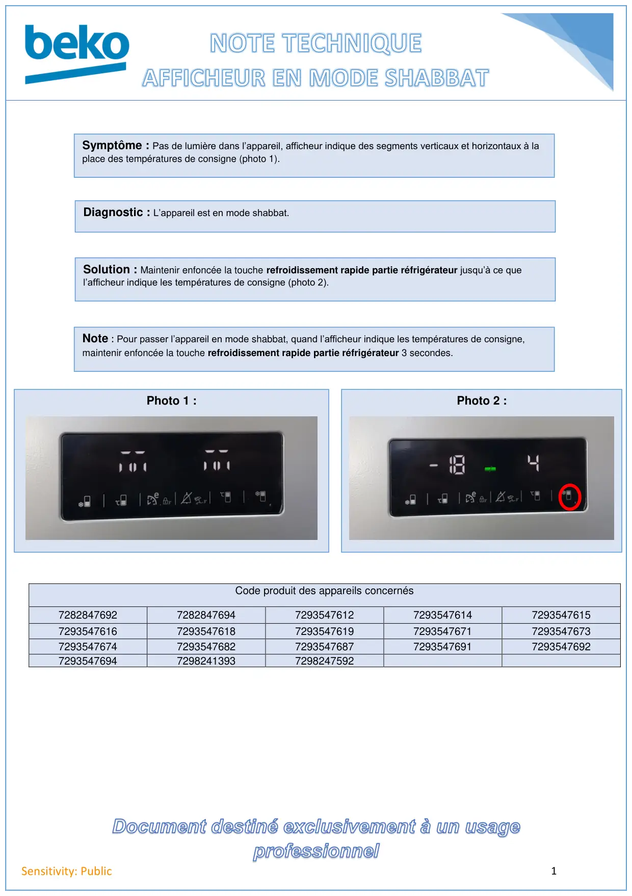

Afficheur REF en mode shabbat

1Sensitivity: PublicCode produit des appareils concernés728284769272828476947293547612729354761472935476157293547616729354761872935476197293547671729354767372935476747293547682729354768772935476917293547692729354769472982413937298247592Symptôme : Pas de lumière dans l’appareil, afficheur indique des segments verticaux et horizontaux à laplace des températures de consigne (photo 1).Diagnostic : L’appareil est en mode shabbat.Solution : Maintenir enfoncée la touche refroidissement rapide partie réfrigérateur jusqu’à ce quel’afficheur indique les températures de consigne (photo 2).Note : Pour passer l’appareil en mode shabbat, quand l’afficheur indique les températures de consigne,maintenir enfoncée la touche refroidissement rapide partie réfrigérateur 3 secondes.Photo 1 :Photo 2 :
1 / 1